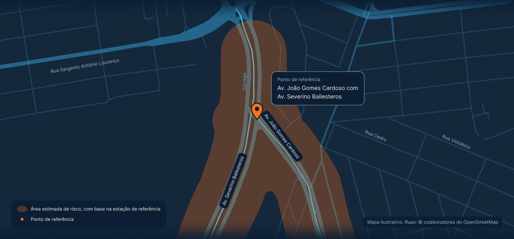
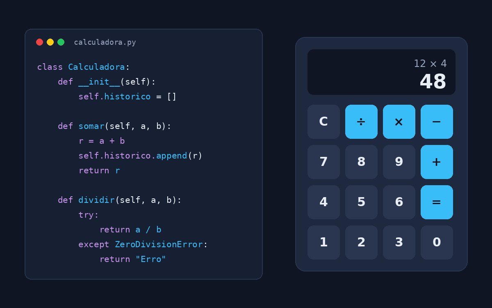
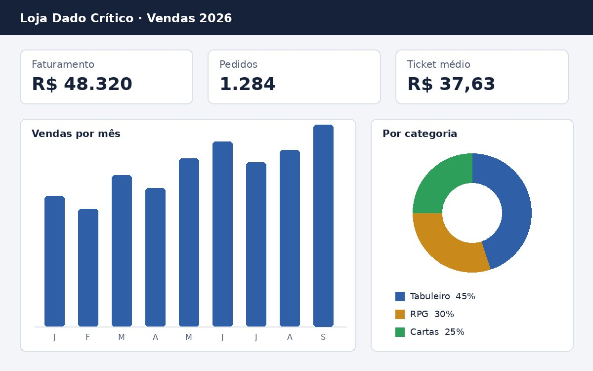
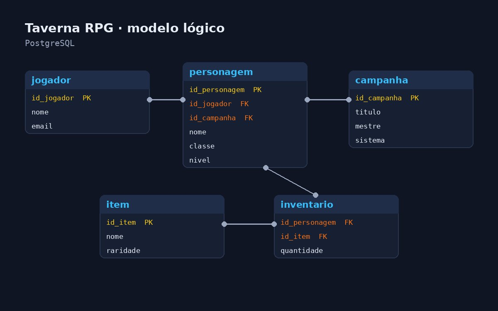

Front-End
Construo páginas com HTML semântico e layouts responsivos usando Grid, Flexbox e media queries, com estilos organizados em variáveis CSS. Também tenho noções básicas de JavaScript.
Estudo Análise e Desenvolvimento de Sistemas no Senac-MG e gosto de descobrir como implementar ideias diferentes. Meu foco hoje é Front-End, Python e Banco de Dados, porém em breve estarei implementando Back-End quanto Front-End.
Fora dos códigos, gosto de jogar jogos online, tabuleiro e RPG além de tentar sempre experimentar novos projetos na vida.
Construo páginas com HTML semântico e layouts responsivos usando Grid, Flexbox e media queries, com estilos organizados em variáveis CSS. Também tenho noções básicas de JavaScript.
Do modelo conceitual ao físico: normalização, criação de tabelas, índices e documentação no PostgreSQL, além do básico do físico em Oracle.
Escrevo programas em Python com funções, estruturas de dados e tratamento de erros, e organizo o código com orientação a objetos, aplicando os pilares de encapsulamento, herança, polimorfismo e abstração.

Projeto de extensão em andamento: um sistema que acompanha a chuva em tempo real com dados do CEMADEN e mostra no mapa o nível de risco de alagamento, com orientações para cada situação.

Calculadora em Python refeita com orientação a objetos: cada operação é um método da classe, os resultados ficam guardados num histórico e a divisão por zero é tratada sem fechar o programa.

Painel de vendas para uma loja fictícia de jogos de tabuleiro, com faturamento, pedidos, ticket médio, vendas por mês e participação de cada categoria.

Banco de dados para organizar campanhas de RPG, com jogadores, personagens, itens e inventário. Modelado do conceitual ao físico, normalizado e implementado no PostgreSQL.
Em andamento. Front-end, banco de dados, Python e orientação a objetos.
Sistema de monitoramento de alagamentos com dados do CEMADEN. Responsável pelo front-end e pela produção de conteúdo textual do site.
Procuro estágio ou primeira vaga em front-end. Se quiser conversar sobre um projeto ou oportunidade, use um dos canais abaixo.